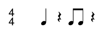

Introduction to Part II
Welcome back.
In the first part of the article, I covered the basic building blocks of Perl and how they can be integrated into the Csound environment. I talked about scalars, arrays, functions, subroutines, formatting numbers, conditional branching and more.
In this second part, I'm focusing on two subjects: macros and pattern matching. I will demonstrate how to use both Csound macros and Perl scalars within the same environment, and also how to substitute macros with scalars. Pattern Matching is considered Perl's greatest asset, and it can be used to modify and create new functional syntax with which composers can customize the Csound language to fit their personal needs.
Finally, the article ends with examples of what can be done with Perl. Though I do not cover these in depth, these scripts are great for deconstructing, studying, and modifying, and will give you the opportunity to get some hands-on experience with code that is designed for real-world applications.
If you haven't done so already, I highly recommend you read Part I of this article. Otherwise, you might find some of the information here out of context. Be sure to download the code for Part I and Part II.
I. More Perl
Scalars vs Macros
Perl scalars and Csound macros share something in common, the $ symbol. In Perl, the $ is the character that designates a scalar, which can store a string, integer or float. In Csound, the $ denotes a macro. This inconvenient intersection of the shared symbol requires the user to be cautious when implementing Csound macros within a Perl script.
The easiest solution when writing Csound macros within a Perl script is to do away with the macros all together. This creates two distinct advantages. First, Perl will not accidently interpret macros as scalars under any circumstances. Second, macros defined in the orchestra are not recognized in the score, and vice versa. This forces Csounders to duplicate macro code or to link to an external file with #include when the same definitions are to be shared between the orchestra and score. Scalars do not share this limitation, and can be used universally.
The following Csound code from macro.csd demonstrates how macros are implemented. Note that the definitions are implemented twice, once in the orchestra and once in the score.
<CsoundSynthesizer>
<CsInstruments>
sr = 44100
kr = 4410
ksmps = 10
nchnls = 1
# define sine #1#
# define puretone #16#
# define fourfourty #440#
instr $puretone
a1 oscil 20000, $fourfourty, $sine
out a1
endin
</CsInstruments>
<CsScore>
# define sine #1#
# define puretone #16#
# define fourfourty #440#
f$sine 0 8192 10 1
i$puretone 0 8
</CsScore>
</CsoundSynthesizer>
The next block of code demonstrates the equivalent code in Perl. The macro definition sections have been completely removed and replaced with a single scalar block of code near the top of the script. The rest of the orchestra and score code has been left in tact, as $sine, $puretone, and $fourfourty seamlessly integrate with Perl's scalar system.
my $sine = 1;
my $puretone = 16;
my $fourfourty = 440;
print CSD << "END";
<CsoundSynthesizer>
<CsInstruments>
sr = 44100
kr = 4410
ksmps = 10
nchnls = 1
instr $puretone
a1 oscil 20000, $fourfourty, $sine
out a1
endin
</CsInstruments>
<CsScore>
f$sine 0 8192 10 1
i$puretone 0 8
</CsScore>
</CsoundSynthesizer>
END
There will be times when making use of Csound macros is still preferable. For these occasions, you should be aware of a few different methods for properly embedding macros into a Perl script.
Perl interprets scalars differently when they're placed within single quotes than double quotes. When printing a scalar within double quotes, the scalar is replaced by the data it holds. However, when a scalar is printed with single quotes, it is treated as a string of characters, and printed as is. The following code prints two lines of instrument code, both with $sine present.
my $sine = 1; print "a1 oscil 10000, 440, $sine" . "\n"; print 'a2 oscil 10000, 444, $sine' . "\n";
Look how $sine was treated differently by the print function when used with double and single quotes. With the double quotes, $sine was replaced with 1. With the single quotes, $sine is printed as $sine.
a1 oscil 10000, 440, 1 a2 oscil 10000, 444, $sine
Mixing single and double quotes within a single script is usually not the optimal solution, especially when dealing with large chunks of code. To avoid using single quotes while still ensuring that macros are treated as macros, the $ symbol can be escaped with the use of the backslash character \. The backslash tells the Perl interpreter to treat the $ as plain text rather than a scalar. This way, scalars and macros can coexist within the same pair of double quotes. Scalars will continue to look like $foo while macros take the form of \$bar.
The following Perl script integrates both scalar and macro functionality within the same block of instrument code.
my $freq = sprintf( "%.4f", rand() * 440 + 440 );
print << "END"
# define sine #1#
instr 1
a1 oscil 10000, $freq, \$sine
out a1
endin
END
When the instrument code is interpreted by Perl, the \$ portion of \$sine is replaced with $, while $freq is replaced with the value it stores.
# define sine #1#
instr 1
a1 oscil 10000, 806.7922, $sine
out a1
endin
Pattern Matching with Regular Expressions
Perl comes equipped with one of the best pattern-matching engines available today. With this powerful tool, one can scan a chunk of data for a user-defined pattern or patterns. A pattern is constructed with a regular expression, which is a string of codes that clearly describe the sought-after data.
The scope of pattern matching with regular expressions go beyond anything I could possibly cover in a short Csound article. The topic is so broad it has its own book: Mastering Regular Expressions[1]. I will introduce you to pattern matching, explain a little of what it does and how to use it. However, the information I present is far from being a complete guide. I recommend using this information in conjunction other tutorials[2] on the same subject.
Regular expressions bring a whole new level of options to Csound. With them, one can write tools that modify existing scores, translate a user's custom computer music syntax into Csound code and much more.
The use of regular expressions can be broken down to two generalized functions: Matching and Substitution.
When using regular expressions to check for a pattern match, the expression will return true if a match is found, or false if a match is not found. This allows us to have better control of our code as pattern matches can dictate the flow of a script when combined with conditional branching. In figure 2.0, the conditional if is used in conjunction with a pattern match. The code within the curly brackets is only executed when ( $bar =~ m/barada/ ) returns the value true[3].
my $bar = "klaatu barada nikto";
if( $bar =~ m/barada/ )
{
print '$bar contains the word "barada"' . "\n";
}
Perl's pattern-matching abilities make altering data through substitution much simpler than in most other languages. The following example searches for the explicit pattern 5.04 in the string $foo and replaces it with 5.05. The rest of the string is left intact. The syntax of the substitution function is differentiated from the matching function with the letter s, positioned between =~ and the first forward slash /. Substitution requires two parameters. This first parameter is a regular expression of the pattern being sought, while the second is the replacement string.
my $foo = "Have you upgraded to Csound version 5.04, yet?\n"; $foo =~ s/5\.04/5.05/; print $foo;
Applying pattern matching and substitution to existing score files can speed up the process of making changes, especially in cases where there are dozens or hundreds of alterations to make.
Imagine this scenario: You have a long list of events, generated by a specific instrument, that make up a musical phrase that you wish to move to another point in time in the score. You could manually make the changes by hand, erasing and retyping new start times for each individual score event. Or you could hack a quick Perl script. The script would not only help with the problem at hand, but could be used again if the same issue comes up in the future.
To solve this problem, I wrote a subroutine called timetravel( ). This subroutine takes three parameters: a string of Csound score code, the instrument number of the events you wish to shift in time, and the amount of time to shift. The subroutine then returns a new string containing the processed Csound score code.
$processed = timetravel( $score, 2, 16 );
timetravel( ) returns a string of processed Csound score code. See timetravel.pl.Let's take a look at what's under the hood of timetravel( ):
sub timetravel
{
my $score = shift; # The score code to process
my $instr = shift; # The instrument to process
my $timeshift = shift; # The amount of time shift
my $line = ''; # Holds the current line of code being processed
my $value = 0; # Stores the new start time
my $scoreReturn = ''; # Stores the processed score
foreach $line ( split( /\n/, $score ) )
{
# Shift the time for instances of the specified instrument
if( $line =~ /^i$instr\s+(\d+\.\d+|\d+)/ )
{
# Shift the time
$value = $1 + $timeshift;
# Substitute the old start time with the new start time
$line =~ s/(^i\d+\s+)(\d+\.\d+|\d+)/$1$value/;
}
# Append to $scoreReturn
$scoreReturn .= $line . "\n";
}
return $scoreReturn;
}
timetravel( ) in timetravel.pl.For each line of Csound code present in $score, timetravel( ) checks for a pattern match defined by the regular expression /^i$instr\s+(\d+\.\d+|\d+)/. If a pattern match is found, the start time portion of the pattern match is substituted with the new time-shifted value.
The following line of the perl script checks a single score event for the pattern match:
if( $line =~ /^i$instr\s+(\d+\.\d+|\d+)/ )
if statement reacts in timetravel( ). See timetravel.pl.At first glance, the preceding regular expressions looks as if one would require a degree from Starfleet[4] in order to decipher it. However, by breaking down the regular expression into individual parts, we can better understand its inner workings.
The flow chart in figure 2.5 demonstrates how the regular expression was derived from a Csound instrument score event.
timetravel( ). See timetravel.pl.Stage 1. The first step to take is to identify a typical Csound instrument score event that the regular expression should match.
Stage 2. Since timetravel( ) works on i events and processes the start times, everything beyond p-field 2 can be ignored.
Stage 3. At this point, write a pseudo-regular expression in general terms that describe each individual component of the narrowed score event. Take into consideration potential variations that might occur. For example, p-field 2 may either be a float or an integer, and the regular expression needs to recognize both.
Stage 4. Translate the pseudo-regular expression into a valid regular expression. The part of the match within the parenthesis, (/d+\.\d+|\d+), is stored into the special scalar $1.
^ In a regular expression, the ^ indicates that the pattern match must begin at the beginning of a string. If any character exists before the i, including white space, the regular expression will not find a pattern match.
i The letter "i".
$instr The regular expression searches to match the data stored in $instr.
\s White space. May include spaces or tabs.
+ Greedy. When the + symbol is used, Perl's pattern matching engine will make every match possible based on the criteria of the previous regular expression code. For example, \s+ will match all white space up to the next non-white space character.
( ) Parenthesis are used to capture portions of the pattern and store them in scalars.
\d Match any digit 0 through 9.
\. The . in a regular expression means to match any type of character. In order to treat a . as an actual period character, such as the decimal in a floating number, the . must be escaped with the backslash.
| This allows the pattern to match for more than one possibility. For example, the start time of an instrument score event may be a float or an integer, and the | allows us to define an expression that will match either of them.
The following figures 2.6 and 2.7 show a score before and after being processed:
my $score = << "END"; f1 0 8192 10 1 t 0 120 i1 0 1 10000 8.00 i1 1 1 10000 7.09 i1 2 0.5 10000 7.07 i1 2.5 1.5 10000 7.04 i1 3 1 10000 7.02 i2 0 1 10000 8.00 i2 1 1 10000 7.09 i2 2 0.5 10000 7.07 i2 2.5 1.5 10000 7.04 i2 3 1 10000 7.02 END # Process score print timetravel( $score, 2, 4 );
timetravel( ). See timetravel.pl.f1 0 8192 10 1 t 0 120 i1 0 1 10000 8.00 i1 1 1 10000 7.09 i1 2 0.5 10000 7.07 i1 2.5 1.5 10000 7.04 i1 3 1 10000 7.02 i2 4 1 10000 8.00 i2 5 1 10000 7.09 i2 6 0.5 10000 7.07 i2 6.5 1.5 10000 7.04 i2 7 1 10000 7.02
timetravel( ). See timetravel.pl.III. Scripts for further Study
Band Vocoder Instrument Generator
Perl is usually equated with being a score generator when used with Csound, as it is very good at doing this. However, I thought it would be interesting to present an example of a script that dynamically creates an instrument based on a handful of parameters.
The Band Vocoder[5] Instrument Generator contains a block of scalars near the top of the script where users can enter values that determine how the band vocoder (a.k.a. channel vocoder) is generated. A user can specify the number of bands, the minimum and maximum frequencies of the carrier and modulator signals, whether the instrument will produce a mono or stereo audio stream, and, when applicable, a method for placing each band channel into a stereo field. Once the instrument is generated, all a user has to do is provide a few lines of code for implementing the carrier and modulator audio streams.
my $instr = 1; # The instrument number my $nBands = 10; # Number of bands my $carMin = 100; # Minimum carrier frequency my $carMax = 8000; # Maximum carrier frequency my $modMin = 200; # Minimum modulator frequency my $modMax = 16000; # Maximum modulator frequency my $nChannels = 1; # 1 = mono, 2 = stereo my $stereoMethod = ALTERNATING; # MONOCENTER, ALTERNATING or RANDOM
Drum Sequencer
Getting lost within a list of instrument events is sometimes less desirable than being able to place events on a grid or lattice. This is especially true when working with rhythms. I'm a firm believer that the interface influences the compositional process. This is why I've started writing a Perl subroutine that allows me to input drum patterns in a manner that is much more user-friendly.
My subroutine dseq( ) is a work in progress that allows a user to enter drum patterns into a horizontal grid, using a string of text. The subroutine parses a pattern and converts them into valid Csound code. The syntax I've chosen is influenced by my personal experiences with Triton's Fast Tracker II[6], Max V. Mathew's Radio Baton Conductor program[7], and graphical MIDI editors such as the one found in Ableton Live[8].
dseq( 1, 0, "f... .... f.f. ...." );
dseq( ) pattern.Translated into a more traditional system of notation, the previous rhythm looks like this:

dseq( ) pattern in figure 3.1.The dseq( ) parser reads the pattern from left to right and recognizes four different types of data: event, rest, whitespace and rhythm directive.
An event is written when the string pattern parser matches a digit or a character between a and f. These characters span the range of hexadecimal numbers between 0x0 and 0xF. The value of the hexadecimal number is translated into a decimal value between 0 and 1, placed into p-field 4 and is generally used to control dynamics of the event.
A rest is denoted by a period. A period does not trigger a note event, but it does act as a spacer between events.
White space allows users to align the text of a pattern to make the rhythms easier to read. They do not trigger any notes events, nor do they act as a rest. White space is also required before and after a rhythm directive is used.
A rhythm directive changes the rhythmic resolutions for the the proceeding events and rests. The default resolution is a sixteenth note. The r directive can be used at any point in a pattern, allowing any combination of resolutions. The r directives come in three different flavors: r#, r# t and r#d#.
r# The # is an integer that represents the division of a whole note. An r4 indicates a quarter note.
r#t The t indicates that the resolution will be a triplet. An r8t indicates a resolution of an eighth note triplet.
r#d# This version allows for irregular rhythms. The d# represents another division of the resolution. An r4d3 is a quarter note divided by three, which is the same as an eighth note triplet. An r4d7 divides a quarter note into seven equal rhythmic parts, known as a septuplet.
The following figure lists examples of r directives and their translated resolutions.
r1 = whole note r2 = half note r4 = quarter note r8 = eigth note r6 = eight note triplet r8t = eigth note triplet r4d3 = quarter note divided by three, the same as an eigth note triplet r4d7 = quarter note divided by 7, or eighth note septuplet.
dseq( ).
# Classic rock beat
my $time = 0;
$csd .= dseq( HIHAT, $time, "f.f. f.f. f.f. f.f." );
$csd .= dseq( SNARE, $time, ".... f... .... f..." );
$csd .= dseq( KICK, $time, "f... .... f.f. ...." );
# Classic rock beat with dynamics
$time += 4;
$csd .= dseq( HIHAT, $time, "c.6. a.6. c.6. a.6." );
$csd .= dseq( SNARE, $time, ".... 8... .... 8..a" );
$csd .= dseq( KICK, $time, "8... .... c.a. ...." );
# Classic rock beat pattern rewritten with resolution directive "r_"
$time += 4;
$csd .= dseq( HIHAT, $time, "r8 c6a6 c6 a 6 " );
$csd .= dseq( SNARE, $time, "r4 . 8 . r16 8. .a" );
$csd .= dseq( KICK, $time, "r4 8 . r8 a8 . . " );
# Triplet hi-hats using resolution triplet directive "r_t"
$time += 4;
$csd .= dseq( HIHAT, $time, "r8t f88 a88 f88 a88 " );
$csd .= dseq( SNARE, $time, " .... c... .... c..." );
$csd .= dseq( KICK, $time, " f... .... f... ...." );
# Triplet hi-hats rewritten using resolution divide directive "r_d_"
$time += 4;
$csd .= dseq( HIHAT, $time, "r4d3 f88 a88 f88 a88 " );
$csd .= dseq( SNARE, $time, " .... c... .... c..." );
$csd .= dseq( KICK, $time, " f... .... f... ...." );
# Demonstration using "r_d_" with irregular rhythms
$time += 4;
$csd .= dseq( HIHAT, $time, "r4d4 aaaa r4d5 aaaaa r4d6 aaaaaa r4d7 aaaaaaa" );
$csd .= dseq( SNARE, $time, " .... f... .... f... " );
$csd .= dseq( KICK, $time, " f... .... f..f .... " );
dseq( ) drum patterns from from drumseq.pl.And Beyond...
This two part article is only meant to be a starting point for those wishing to expand their computer music vocabulary. Though I've only scratched the surface, the knowledge presented here is a solid foundation to build on. With a little bit of time and effort, you will soon be able to build your own tools, customized to your personal style and preferences. In time, Perl will open new doors of compositional possibilities.
Acknowledgments
I want to thank the editors of the Csound Journal, Steven Yi and James Hearon, for presenting me this opportunity to give something back to the Csound community. I would also like to thank my friend Justin Day, who introduced me to Perl back in 1999-2000.
Best,
Jacob Joaquin
Files
PerlCsound.zip - All the Perl scripts and unified Csound csd files for Part I.PerlCsound2.zip - All the Perl scripts and unified Csound csd files for Part II.
Links
Csounds.com - ... almost everything Csound.Csound Journal - Inspiration in Ezine form.
Hacking Perl in Nightclubs - By Alex Mclean
Granul 01 - Perl Granular Instrument Generator by René Nyffenegger.
Harmonic Trees - Perl-Csound related compositions and theory by Jacob Joaquin.
PerlMonks.org - An Online Monastery of Perl Programmers and Perl Resources.
Perldoc.com - Perl Documentation Online
The Csound Blog @ Thumbuki - The Csound Blog is a collection of journals that are distributed within unified Csound csd files.
Thumbuki.com - The Cosmos in 20 Words or Less.
References
[1] Friedl, Jeffrey E. F. 2002. Mastering Regular Expressions. O'Reilly & Associates http://www.oreilly.com/catalog/regex2/[2] Perlretut. Regular Expression Tutorial. http://perldoc.perl.org/perlretut.html
[3] Gort. 1951. Quote from The Day the Earth Stood Still. Twentieth Century-Fox
[4] Starfleet. Wikipedia.org. http://en.wikipedia.org/wiki/Starfleet
[5] Joaquin, Jacob T. 2007. Robot Voices and Android Grooves. The Csound Blog. http://www.thumbuki.com/csound/files/thumbuki20070206.csd
[6] Fasttracker II. Wikipedia.org. http://en.wikipedia.org/wiki/Fast_Tracker
[7] Mathews, Max V. Radio Baton Conductor Program. 2000. http://csounds.com/mathews/manuals/ConductorManual.pdf
[8] Ableton Live. http://www.ableton.com/live